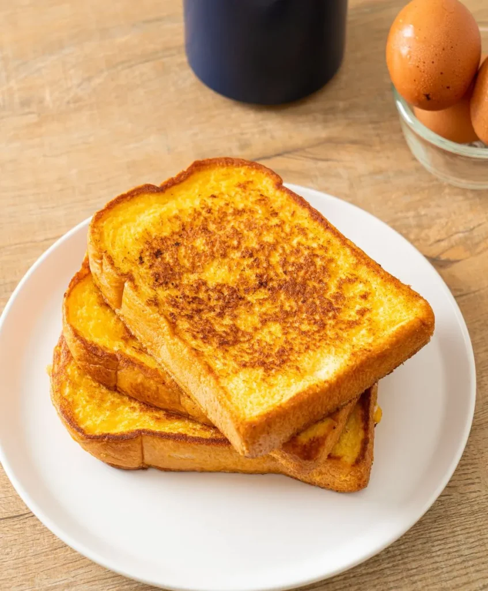

How to Make French Toast

Ingredients
For a delicious, classic French toast recipe, you will need the following ingredients:
- 2 large eggs
- ½ cup milk (whole milk for a richer flavor, or any milk alternative like almond milk)
- 1 teaspoon vanilla extract
- ½ teaspoon ground cinnamon
- Pinch of salt
- 2 slices of bread (preferably day-old or thick-cut)
- Butter or oil for frying
- Maple syrup, powdered sugar, or fresh fruit for serving
Directions
Here is how to make your French toast:
- Whisk the Egg Mixture: In a mixing bowl, combine the eggs, milk, vanilla, cinnamon, and a pinch of salt.
Whisk until smooth.
- Dip the Bread: Heat a non-stick skillet over medium heat and add a small amount of butter or oil. Dip one
slice of bread into the egg mixture, making sure both sides are coated, but not soaked.
- Cook the French Toast: Place the dipped bread on the skillet and cook for 2-3 minutes on each side or until
golden brown and crispy.
- Serve: Once both sides are golden brown, remove the French toast from the skillet and place it on a plate.
Top with your favorite toppings—maple syrup, fresh berries, or a dusting of powdered sugar.
Thank you Anupam Kuman from Daily Nutriplan
Home